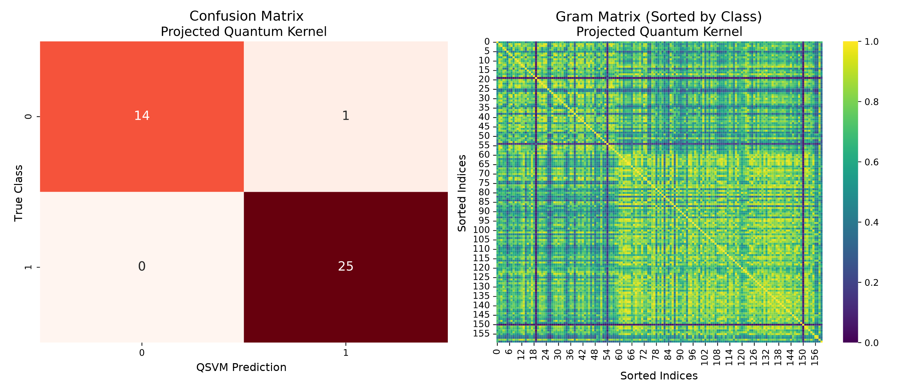
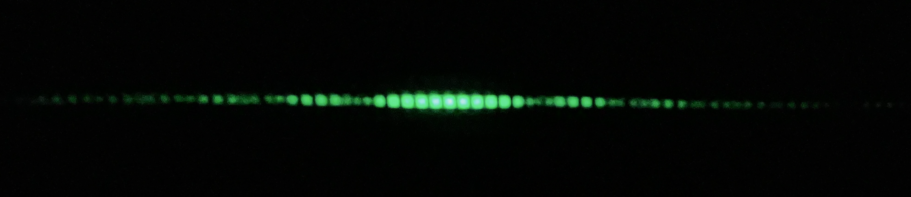

M.Sc. Physics (Quantum Computing and Technologies)
2025 – 2028 (Expected)B.Sc. Physics
2021 – 2025High School Diploma (Scientific)
2015 – 2020
Comparative benchmark of 5 quantum encoding strategies (Amplitude, Angle, Basis, IQP, Projected Quantum Kernel) against a classical RBF baseline, across 6 datasets with different geometries. Evaluates how well each encoding's kernel geometry matches the classification task, using dedicated metrics (Kernel-Target Alignment, Geometric Coefficient) alongside standard accuracy.

Construction and calibration of a Mach-Zehnder interferometer using FDM optical mounts. Fringe intensity acquisition via OPT101 photodiodes and a Siglent SDS824XHD oscilloscope, with thermally induced phase shift via a Kapton heater.

Design and home-built realization of the double-slit experiment in the single-photon regime. Utilizing a heavily attenuated 520 nm laser (N < 0.02) and optical components (mounts and ~0.12 mm slits) entirely prototyped in PLA.
-
IEEE QCE26 Toronto, 2026International Conference on Quantum Computing & Engineering | Selected as Student Volunteer
-
CISF26 Rome, 2026Italian Conference of Physics Students | Attendee and Oral Presenter
-
SIPE25 Bari, 2025Spanish Italian Physics Exchange | Attendee and Oral Presenter
-
LoT25 Pisa and Florence, 2025Lights of Tuscany | Attendee and Poster Presenter